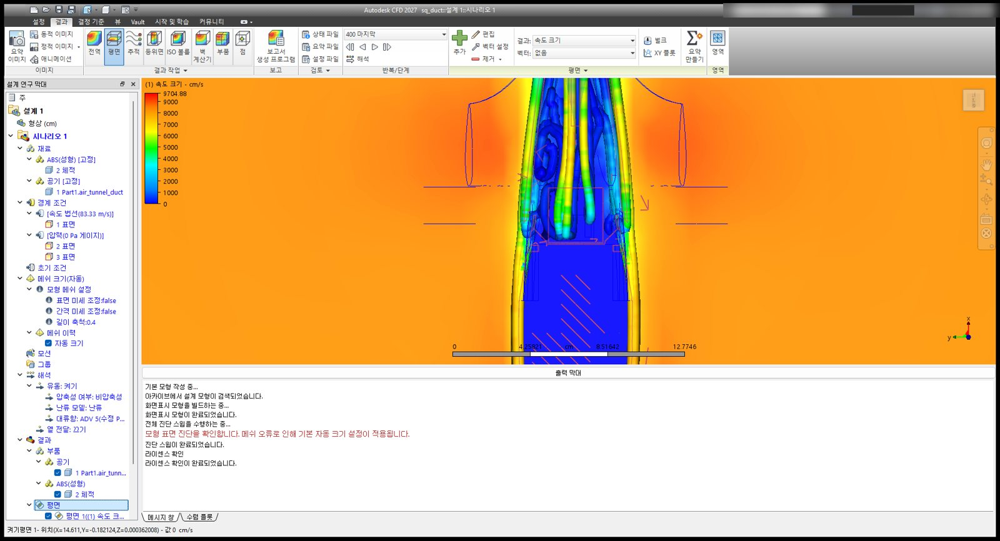
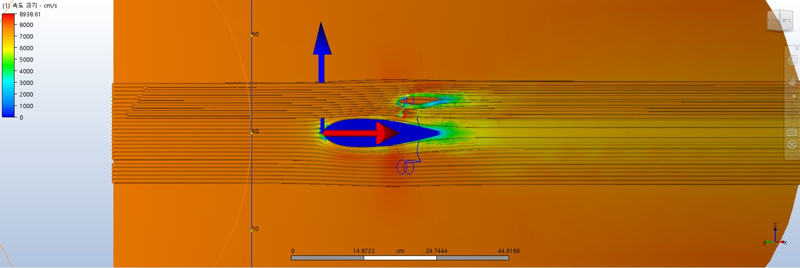
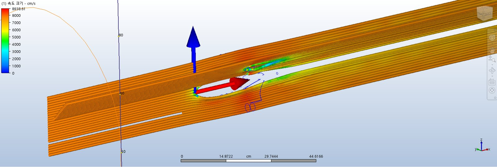
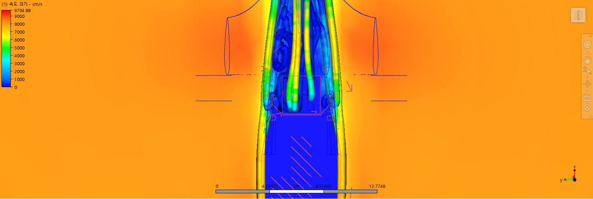

Overview
Dimensions
The motors sit on a 98 mm radius, the smallest that keeps at least 5 mm between the 5-inch prop discs and the fuselage.
Propulsion & power
Prop rotation · seen from the nose
The 45° and 225° props turn counter-clockwise, the 135° and 315° props clockwise, so each diagonal pair turns the same way.
Dashed circles are the 5-inch prop discs. Arm angles are the CAD model's, measured looking forward from the tail, so they appear mirrored in this nose-on view.
Cooling air path · each nacelle
- Six windows in the front of the motor bell
- Stator windings
- Four base vents
- Holes in the 4 mm nacelle front wall
- Out through six tail-cone slots (3.6 × 13.3 mm)
Cooling air path · electronics bay
- NACA flush inlet on each side of the fuselage (7° ramp, 17 mm throat)
- Into the bay beside the 4-in-1 ESC and flight controller
- Out through two slots in the hatch and the Ø8 mm tail hole
Mass & balance
estimatedElectronics at catalog mass. Printed parts from CAD volume at 1.27 g/cm³ (PETG), with the exposed fins at 45% density (4 walls, 20% infill): main body 217 g, nose cone 30 g, four nacelle tail cones 25 g, hatch 13 g, tail cone 6 g.
Performance
theoreticalPitch-speed ceiling
Assumes loaded rpm is 85% of KV × voltage. Top speed is set by prop pitch × rpm rather than airframe drag, so going faster needs higher-pitch props, higher KV or more voltage. Not flight-tested.
The airflow in the 3D view comes from a potential-flow model of the fuselage and nacelle pods plus a simple prop-slipstream model. It shows the flow pattern; it is not wind-tunnel or CFD data. The CFD results are in section 06.
CFD analysis
300 km/h · simulatedEvery step of this analysis was done by Claude, Anthropic's AI, on its own. It built the flow geometry in Fusion 360 and drove Autodesk CFD 2027 through import, materials, boundary conditions, mesh and solve. Then it placed the cut planes and streamlines and took the screenshots below.
Nobody clicked anything in the CFD software. CFD's Python API crashes on boundary conditions, so Claude set them by operating the program's own window. The builder only said what to analyze.





What it says about 300 km/h
- Props first. 300 km/h needs a pitch speed of about 375–405 km/h, and the current 5×5 at 1950 KV gives 280–318. Pitch × rpm has to go up 35–45%: higher pitch, higher KV or 8S.
- Spinners on the motors. 88% of the drag is pressure drag, so the flat motor fronts are the first shape fix.
- A bigger battery. 110–135 A means 85–105C from a 6S 1300 mAh pack.
- A baffle in the bay to send the inlet air through the ESC instead of round the stack.
- 1 · GeometryClaude merged the airframe into one solid in Fusion 360, cut a wind tunnel around it and exported STEP.
- 2 · Setup and solvePython scripts in CFD for import, materials and mesh. Window automation for inlet speed and far-field pressure. k-ε turbulence, 400 iterations.
- 3 · ResultsForces read from the solver's output files. Planes, traces and screenshots placed through the CFD window.
Coarse automatic mesh (about 435k fluid cells), no spinning props and flat motor fronts, so treat the drag as an upper bound. In the inlet run the turbulence residuals did not settle everywhere. Velocity and pressure did, and the drag matched the 280 km/h run scaled by speed² to within 0.1%. Not wind-tunnel or flight data.
Want Claude to do this with your own designs?The field manual shows how to set up Claude with Fusion 360 and get design work like this done just by asking.
Get the field manualAirframe
Printing
5 parts · 8 printsPrint the nose cone and hatch in plain PETG or ASA. Carbon-filled filament would block the VTX, receiver and GPS. A carbon-filled main body raises the arm frequency by about 1.7×.
Avionics
CAD verification
Measured minimum clearance
Next steps
- Print fit-test pieces: nose joint, hatch lip and rear tab
- Print the airframe in PETG or ASA
- Wire and soft-mount the 4-in-1 ESC and flight controller
- Measure arm vibration against the 175 Hz model
- Flight testing and GPS speed runs